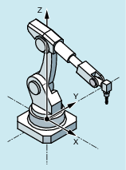
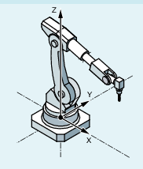
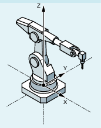
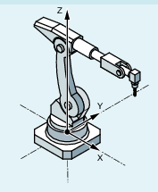

Die Positionsangabe mit kartesischen Koordinaten und die Angabe der Werkzeugorientierung reichen nicht aus, um die Maschinenstellung eindeutig festzulegen, da bei gleicher Werkzeugorientierung mehrere Gelenkstellungen möglich sind. Je nachdem, um welche Kinematik es sich handelt, existieren bis zu 8 unterschiedliche Gelenkstellungen. Diese unterschiedlichen Gelenkstellungen sind transformationsspezifisch.
Um Mehrdeutigkeiten zu vermeiden, wird die Stellung der Gelenke unter der Adresse STAT angegeben.
| Hinweis |
|
Die Steuerung berücksichtigt programmierte STAT-Werte nur bei PTP-Bewegungen. Bei CP-Bewegungen werden sie ignoriert, da beim Verfahren mit aktiver Transformation ein Stellungswechsel normalerweise nicht möglich ist. Beim Verfahren mit aktivem CP wird die Stellung für den Zielpunkt vom Startpunkt übernommen. |
| Einstellbare Adresse zur Angabe der Gelenkstellungen |
| Binär- oder Dezimalwert Enthält für jede der möglichen Stellungen ein Bit. Die Bedeutung der Bits wird von der jeweiligen Transformation festgelegt. |
Die Anwendung von STAT soll am Beispiel eines 6-achsigen Knickarmroboters mit Frässpindel veranschaulicht werden. Die kinematische Transformation soll über die Robotertransformation ROBX erfolgen (Voraussetzung: Compile-Zyklus "RMCC/ROBX Transformation Robotik erweitert" ist geladen und aktiv).
| Hinweis |
Beispiel mit ROBX nur mit konventioneller Maschinendaten-ParametrierungDas Beispiel ist nur mit Maschinendaten-Parametrierung möglich, nicht mit kinematischen Ketten. |
Die Achsen A1, A2 und A3 sind die Hauptachsen des Knickarmroboters. Mit den Hauptachsen werden die Achsen A4, A5 und A6, die als Kopf- oder Handachsen bezeichnet werden, im Arbeitsraum positioniert. Durch die zusätzlichen Bewegungsmöglichkeiten der Handachsen kann die Frässpindel im Raum so orientiert werden, wie es für die Bearbeitungsaufgabe erforderlich ist. Bei gleicher Werkzeugorientierung sind dabei verschiedene Gelenkstellungen möglich.
Die Auswahl der für die Bearbeitung zu verwendenden Gelenkstellungen erfolgt durch Programmierung von Bit 0 ... 2 der einstellbaren Adresse STAT:
Programmbeispiel:
| Programmcode | Kommentar |
|---|---|
| ... | |
| N14 T="T8MILLD20" D1 | ; $TC_DP3[1,1]=132.95 |
| N16 ORIMKS | |
| N17 G1 PTP X1665.67 Y0 Z1377.405 A=0 B=0 C=0 STAT=... F2000 | ; Der STAT-Wert bestimmt die Gelenkstellungen (s. u.). |
| ... |
| → Shoulder Left → Elbow Down → No Handflip |  |
| → Shoulder Right → Elbow Up → No Handflip |  |
| → Shoulder Left → Elbow Down → Handflip |  |
| → Shoulder Right → Elbow Up → Handflip |  |
Bei TRANSMIT_K wird die Adresse STAT benutzt, um die Mehrdeutigkeit hinsichtlich des Pols aufzulösen.
Wenn die Rundachse um 180º drehen muss bzw. die Kontur bei CP durch den Pol führen würde, gilt:
Bit 0 | Nur relevant bei $NT_POLE_SIDE_FIX[n] = 1 bzw 2 bei Maschinendaten-Parametrierung ist das $MC_TRANSMIT_POLE_SIDE_FIX_1/2 = 1 bzw. 2: | |
= 0 | Rundachse verfährt um +180º bzw. dreht im Uhrzeigersinn. | |
= 1 | Rundachse verfährt um -180º bzw. dreht gegen den Uhrzeigersinn. | |
Bit 1 | Nur relevant bei $NT_POLE_SIDE_FIX[n] = 0 bei Maschinendaten-Parametrierung ist das $MC_TRANSMIT_POLE_SIDE_FIX_1/2 = 0: | |
= 0 | Es wird durch den Pol gefahren. Die Rundachse dreht nicht. | |
= 1 | Es wird um den Pol gedreht. Dabei ist Bit 0 von STAT relevant. | |
Siehe auch:
Kartesisches PTP-Fahren ein-/ausschalten (PTP, PTPG0, PTPWOC, CP)